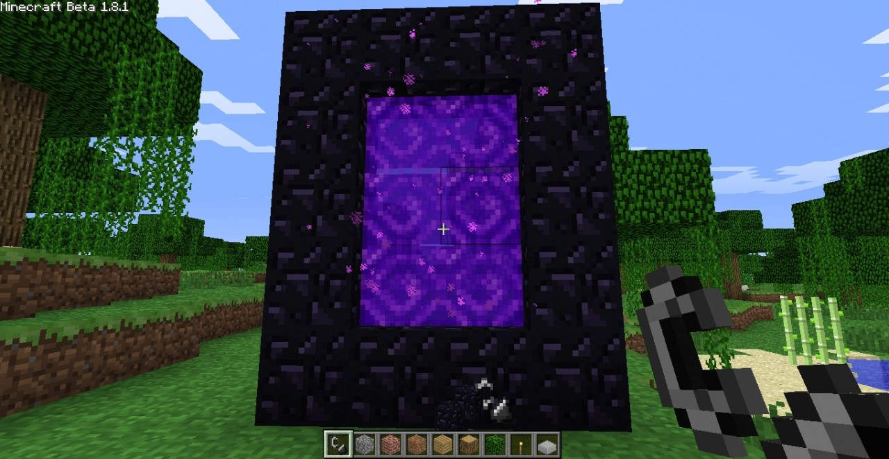
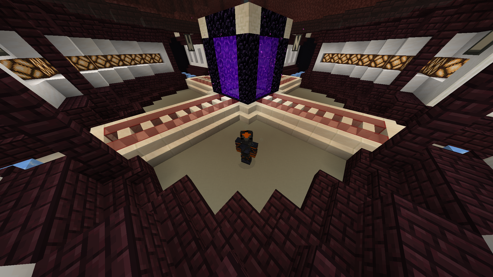

This is the Travel page
Minecraft being a infinite world means that distance between you and your location can be extremely far. How to I make travel between points faster? In the end of Minecraft you can obtain elytra which lets you fly but this is at the end game which means this will not be easily obtained. There is minecarts but there are very expensive and also not very fast. What can I do?
Minecraft has a dimension called the Nether where 8 block in the overworld is equal to 1 blocks in the Nether. Making multiple portals at locations you constantly go to will save you so much time. It’s necessary to have a Nether Hub when playing with friends, so how do you make a portals and how to I link portals ? You need obsidian which you need a diamond pick to mine and find when water touches water so looking in caves. You need to make a obsidian frame (4*5 minimum, 23*23 maximum), after making the frame light with flint and steel (one iron ingot and one piece of flint). To link the portals built one in the overworld and get your x and z coordinates, turn those coordinates into the Nether version and built and light a portal and now they are linked! How do I get my Nether coordinates? Just divide coordinates by 8 or use my calculator below!
MathTime!
Put in your X and Z Overworld coordinates and it will convert it into nether Coordinates! You dont need Y coordinate becuse Nether Portal will link with difference Y coordinate. Please put in number and not letter! Push submit when you are dont puting in your X and Z coordinate and below it will be your Nether coordinate. On the Java version of Minecraft you have to press F3 to enter visual mode, your x and z will be in the middle left. On Bedrock Edition you need to turn on coordinate in the world settings and they will appear in the top right side of your scream, the one to the far left is your x, the one in the middle is your y, and your z is the far right one
